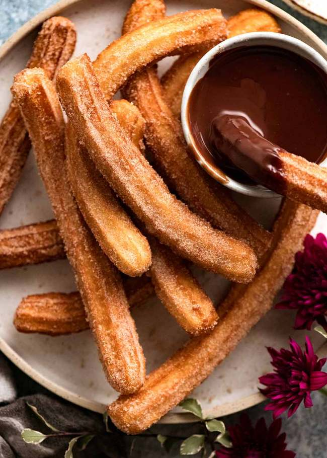

Churros

Description
Ingredients
Cinnamon Sugar Coating
- 1/4 cup caster / superfine sugar
- 2 tsp ground cinnamon
Churros
- 1 cup flour, plain / all purpose
- 1 tsp baking powder
- Pinch of salt
- 1 tbsp vegetable, canola or olive oil (not extra virgin olive oil)
- 1 cup boiling water
- 2 cups+ vegetable or canola oil, for frying
Chocolate Sauce
- 1/2 cup dark chocolate or semi sweet chocolate chips
- 1/2 cup thickened / heavy cream
Steps
Churros
- Cinnamon sugar coating: Combine sugar and cinnamon in a shallow bowl, set aside.
- Batter: Mix flour, baking powder and salt in a bowl. Add oil and water and mix until just combined - it should
be a thick, gummy batter, like a wet sticky dough, not thin and watery.
- Piping bag: Transfer dough into a piping bag with a 8mm / 1/3" star tip nozzle. Set aside while oil heats.
- Heat oil: Heat 5cm / 2" oil over medium high in a small pot, wok or small but deep skillet (Note 3) to
170°C/340°F, or until it takes 20 seconds for a small cube of bread to turn golden.
- Pipe & snip: Pipe 15cm / 6" lengths of dough into the oil, snipping with scissors (snip close to oil surface to
avoid splash). Do 3 to 4 per batch, makes 10 to 12 in total.
- Cook: Cook for 2-3 minutes or until golden and crisp, rolling occasionally.
- Drain: Remove onto paper towel lined plate to drain. Then roll in sugar. Serve hot with Chocolate Sauce!
Chocolate Sauce
- Place in a heatproof bowl and microwave in 30 second bursts, stirring in between, until smooth. Set aside for 5
minutes to cool and thicken slightly.
Go Back To Recipe List